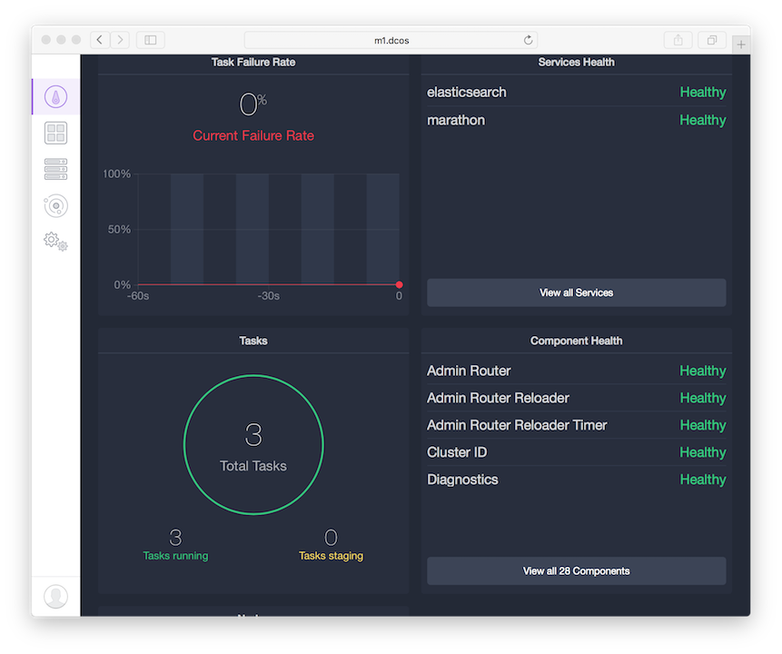
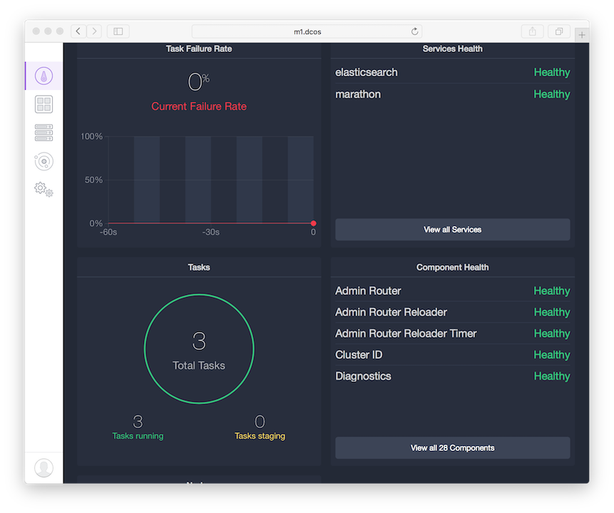
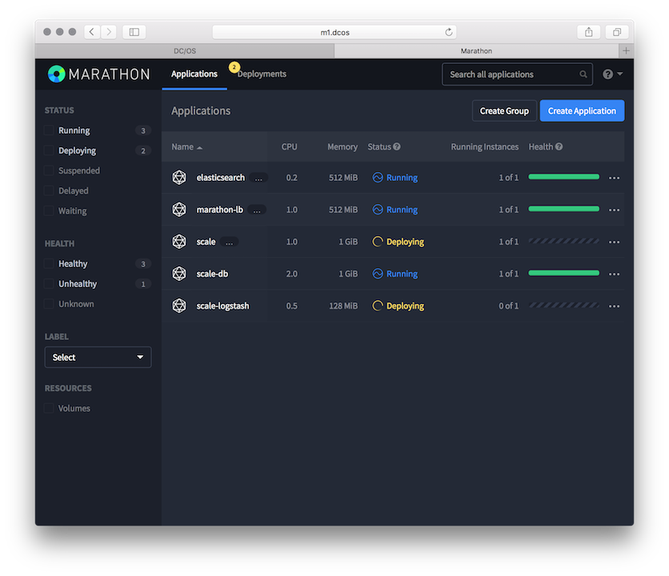
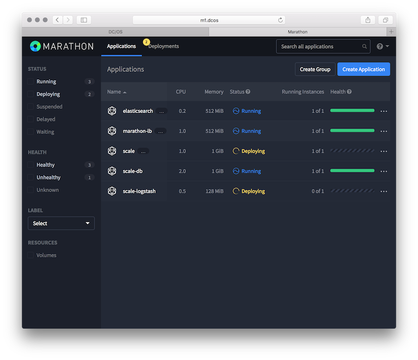

This document provides a quickstart which will get you up and running with scale fairly quickly. it uses DC/OS as the execution framework. If you already have a DC/OS cluster you can go straight to step 2. Otherwise, you can setup a virtual DC/OS cluster using the excellent DC/OS vagrant configuration.
>First, you need to setup a DC/OS cluster. This can be accomplished with VirtualBox and Vagrant. Setup your pre-requisites and grab the Vagrant configurations following the instructions here.
Now you need to spin up a cluster. For this example, we'll create a single master node, a single public node, four private nodes, and a boot node. The public node will allow access to Scale without logging into DC/OS.
vagrant up m1 p1 a1 a2 a3 a4 boot
Now you can access http://m1.dcos and login to DC/OS.

Install the DC/OS command line tool and login to DC/OS.
dcos auth login
Please go to the following link in your browser:
https://m1.dcos/login?redirect_uri=urn:ietf:wg:oauth:2.0:oob
Enter authentication token: eyJ0eXAiOiJKV1Q...
Login successful!

Run pre-requisite packages. Marathon-lb may not be required in your configuration. If you don't have an administrative zone and public nodes, you will not likely need marathon-lb. It is required for proper function in the Vagrant example.
{
"marathon-lb": {
"auto-assign-service-ports": false,
"bind-http-https": true,
"cpus": 1,
"haproxy-group": "external",
"haproxy-map": true,
"instances": 1,
"mem": 512,
"minimumHealthCapacity": 0.5,
"maximumOverCapacity": 0.2,
"name": "marathon-lb",
"role": "slave_public",
"sysctl-params": "net.ipv4.tcp_tw_reuse=1 net.ipv4.tcp_fin_timeout=30 net.ipv4.tcp_max_syn_backlog=10240 net.ipv4.tcp_max_tw_buckets=400000 net.ipv4.tcp_max_orphans=60000 net.core.somaxconn=10000",
"marathon-uri": "http://master.mesos:8080"
}
}
dcos package install --options=marathon-lb.json marathon-lb
We recommend a minimum of 0.5 CPUs and 256 MB of RAM available for the Marathon-LB DCOS Service.
Continue installing? [yes/no] yes
Installing Marathon app for package [marathon-lb] version [1.3.3]
Marathon-lb DCOS Service has been successfully installed!
See https://github.com/mesosphere/marathon-lb for documentation.
{
"mesos": {
"master": "zk://master.mesos:2181/mesos"
},
"elasticsearch": {
"framework-name": "elasticsearch",
"failover-timeout": "2592000.0",
"zookeeper-mesos-timeout": "20000",
"port": "31105",
"force-pull-image": false,
"executor": {
"ram": "512",
"cpu": "0.5",
"disk": "512",
"instances": "1",
"cluster-name": "mesos-ha",
"name": "elasticsearch-executor"
},
"scheduler": {
"cpu": "0.2",
"ram": "512",
"instances": "1",
"java-heap": "-Xms128m -Xmx256m"
}
}
}
dcos package install --options=elasticsearch.json elasticsearch
The ElasticSearch DCOS Service implementation is alpha and there may be bugs, incomplete features, incorrect documentation or other discrepancies.
Continue installing? [yes/no] yes
Installing Marathon app for package [elasticsearch] version [1.0.1]
Elasticsearch is staging. Check Marathon and the ES management front-end for status.
It may take a few minutes for the deployment to finish. Check
the DC/OS dashboard for a status display. When complete, you'll see elasticsearch
in the list of services. Three tasks will be running and none will be staging.
 

Deploy the Scale service.
{
"id": "/scale",
"cpus": 1.0,
"mem": 1024.0,
"instances": 1,
"container": {
"type": "DOCKER",
"docker": {
"image": "geoint/scale",
"network": "HOST",
"forcePullImage": true
}
},
"args": ["scale_scheduler"],
"constraints": [["hostname", "UNIQUE"]],
"healthChecks": [{
"path": "/api/status/",
"protocol": "HTTP",
"portIndex": 0,
"gracePeriodSeconds": 600,
"intervalSeconds": 30,
"timeoutSeconds": 20,
"maxConsecutiveFailures": 3,
"ignoreHttp1xx": false
}],
"labels":{
"DCOS_PACKAGE_FRAMEWORK_NAME": "scale",
"HAPROXY_GROUP":"external",
"HAPROXY_0_PORT":"8008",
"HAPROXY_0_VHOST":"marathon-lb.marathon.mesos"
},
"env": {
"ENABLE_NFS": "true",
"ENABLE_GUNICORN": "true",
"ENABLE_HTTPD": "true",
"SCALE_DB_NAME": "scale",
"SCALE_DB_USER": "scale",
"SCALE_DB_PASS": "scale",
"SCALE_DB_HOST": "scale-db.marathon.slave.mesos",
"SCALE_DB_PORT": "5432",
"MESOS_MASTER_URL": "zk://master.mesos:2181/mesos",
"DCOS_PACKAGE_FRAMEWORK_NAME": "scale",
"SCALE_SECRET_KEY": "a-random-secret-key",
"SCALE_ALLOWED_HOSTS": "*",
"SCALE_API_URL": "/ui/api",
"SCALE_STATIC_URL": "/scale/ui/static/",
"SCALE_STATIC_ROOT": "static/",
"DEPLOY_DB": "true",
"DEPLOY_LOGGING": "true",
"INIT_DB": "true",
"LOAD_COUNTRY_DATA": "true",
"NFS_POSTGRES_UID": "26",
"NFS_POSTGRES_GID": "26",
"DB_DOCKER_IMAGE": "mdillon/postgis",
"SCALE_DB_HOST_VOL": "",
"SCALE_LOGGING_ADDR": "",
"SCALE_DEBUG": "true"
}
}
dcos marathon app add scale.json
It will take a few minutes for the deployment to finish. Check
the DC/OS dashboard for a status display. When complete, you'll see scale
in the list of services. You can get additional status and information from the
Marathon dashboard.
Once Scale is running you can access the Scale dashboard.

 
